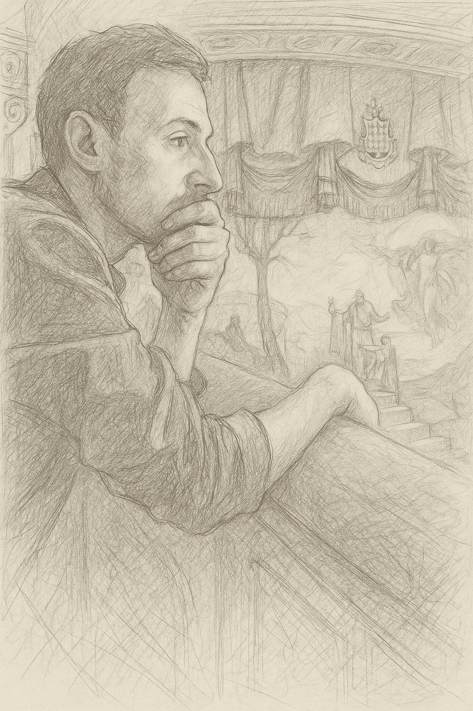

Giovanni Tidei
Teacher & Web Developer
I am a high school teacher with a strong passion for web development since 2020. While my academic background is in humanities, I’ve dedicated myself to mastering modern web technologies with a focus on fluid user interfaces, responsive design, and clean code. My approach blends logical thinking from philosophy with the creativity of front-end development.
I’m deeply fascinated by how technology bridges ideas and users, and I continuously explore new tools and frameworks to create intuitive digital experiences.
Le mie competenze:
Javascript
TypeScript
React
Bootstrap
Tailwind
Node.js
SQL
